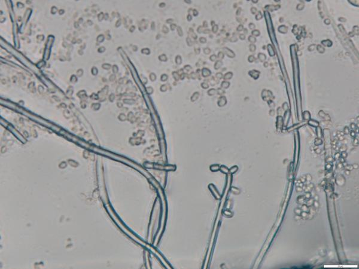
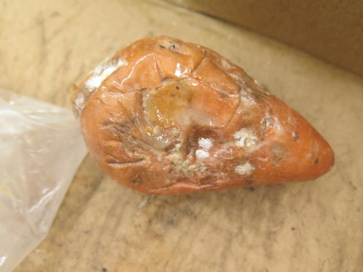
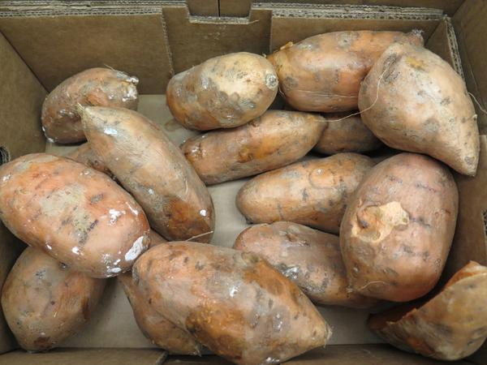
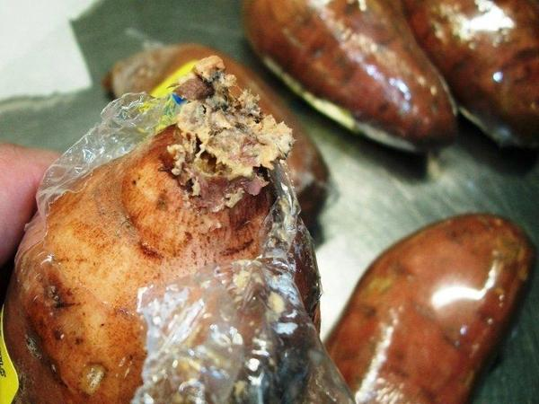

Pathogen
Geotrichum sour rot is caused by the ascomycete fungus Geotrichum candidum (Figure 1).

Figure 1. Geotrichum candidum observed under the microscope at 40x magnification.
Dr. Lina Quesada, NC State Vegetable Pathology Lab
Host Crops and Plants
Geotrichum candidum can infect a number of different plants when the environmental conditions are favorable for disease. Reported hosts include, but are not limited to, soybean, strawberry, tomato, and peach. For a complete list of hosts please visit USDA Fungus-Host Distributions Database.
Identification
As geotrichum sour rot is very reliant on favorable environmental conditions, the symptoms produced are highly varied, and thought to be dependent on the duration of favorable conditions. The most obvious symptom of an active infection is a wet, soft rot of the storage root combined with a distinct sour odor (Figure 2). During active infections, white mycelial tufts may also become present on the root surface. When favorable conditions are removed, affected areas on the storage root will exhibit a 1-3 mm collapse of the outer root tissue, which will become firm over time (Figure 3). These collapsed lesions will have highly irregular borders and can greatly vary in size and shape, but rot and decay of further tissue will cease. Geotrichum sour rot lesions can be associated to chilling injury wounds and the tips of shrink wraped roots (Figure 4).

Figure 2. Geotrichum sour rot soft rot on surface of sweetpotato root. White micelia may be seen covering the rotted areas.
Dr. Lina Quesada, NC State Vegetable Pathology Lab

Figure 3. Geotrichum sour rot lesions that have become firm over time and lesions promote by chilling injury.
Dr. Lina Quesada, NC State Vegetable Pathology Lab

Figure 4. Rotted tip of shrink wrapped sweetpotato infected with geotrichum sour rot due to anoxic conditions.
Dr. Lina Quesada, NC State Vegetable Pathology Lab
Favorable Environmental Conditions for the Disease
Optimal conditions for disease development are:
- High moisture (soil moisture or relative humidity)
- High temperature
- Low oxygen levels (these anoxic conditions can happen in flooded fields, shrink wrap sweetpotatoes, and during storage)
Disease Transmission
Geotrichum candidum is a ubiquitous soil-inhabitant with a world-wide distribution that can be disseminated by both wind and water. The pathogen is restricted to areas with high water availability, and can grow in poor oxygen environments, although it cannot grow anaerobically. Sweetpotatoes are likely to be exposed to this fungus across all stages of production, but disease is rarely observed. For pathogenesis to occur, sweetpotatoes must be exposed to stressful conditions combining high temperature, high moisture, and most importantly low oxygen, and usually require a wound for infection.
General Disease Management
- Select field sites with good drainage
- Avoid harvesting sweetpotatoes when plants are wet
- Cure roots soon after harvest, and store them dry
- Maintain good ventilation within storage rooms
Disease Control for Conventional Growers
The best control for geotrichum sour rot is to avoid favorable conditions for the disease. Prevent or reduce sweetpotato exposure to high moisture, high temperature, and low oxygen environments in both the field and storage rooms.
There are no conventional fungicides labeled for control of geotrichum sour rot in the field or for post-harvest use. For the latest fungicide recommendations for sweetpotato diseases see the Southeastern US Vegetable Crop Handbook. Fungicide labels are legal documents, always read and follow fungicide labels.
Useful Resources
- The NC State Plant Disease and Insect Clinic provides diagnostics and control recommendations
- The Extension Plant Pathology Portal provides information on crop disease management
- The Southeastern US Vegetable Crop Handbook provides information on vegetable disease management
- The USDA Fungus-Host Distributions Database provides information about reported hosts for fungal and oomycete pathogens
Acknowledgements
This factsheet was prepared by the NC State Vegetable Pathology Lab in 2018.
Publication date: Sept. 24, 2018
Reviewed/Revised: Jan. 9, 2023
Recommendations for the use of agricultural chemicals are included in this publication as a convenience to the reader. The use of brand names and any mention or listing of commercial products or services in this publication does not imply endorsement by NC State University or N.C. A&T State University nor discrimination against similar products or services not mentioned. Individuals who use agricultural chemicals are responsible for ensuring that the intended use complies with current regulations and conforms to the product label. Be sure to obtain current information about usage regulations and examine a current product label before applying any chemical. For assistance, contact your local N.C. Cooperative Extension county center.
N.C. Cooperative Extension prohibits discrimination and harassment regardless of age, color, disability, family and marital status, gender identity, national origin, political beliefs, race, religion, sex (including pregnancy), sexual orientation and veteran status.
![QR code linking to this publication page]()